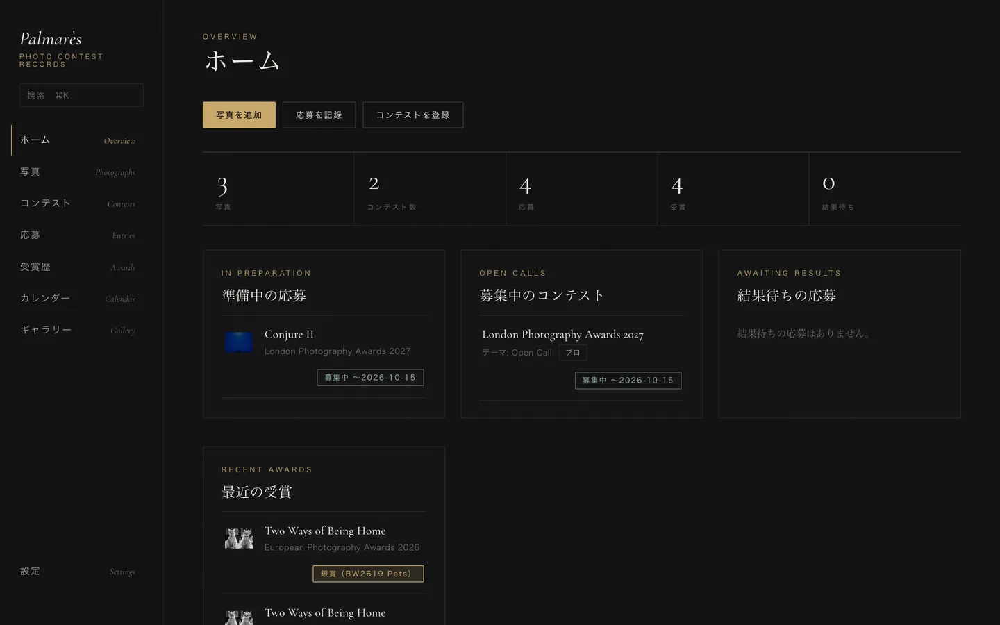

あなたの大切な瞬間を、
もっと美しく。
記憶に残り続ける一枚を。
スポーツ、ライブ、ポートレート。シャッターを切るのは、その場の空気が最も張り詰めた一瞬。
事前のヒアリングから納品まで、撮影の目的に寄り添って丁寧に伴走します。
Fields


Founder
糴川 樹 Itsuki Serikawa
パワーリフティングU18世界3位・水泳全国2位。アスリートとしての原体験から、スポーツ撮影の道へ。
競技者として限界と向き合った経験があるから、プレーの前に息を呑む一瞬も、終わった後に崩れる表情も、逃さず切り取れる。その視点は国際的な写真賞でも評価されています。
- GoldEuropean Photography Awards 2026 — Pro Fine Art Kinetic（2作品）
- GoldLondon Photography Awards 2026 — Pro Fine Art Conceptual
- SilverEuropean Photography Awards 2026 — Pro Fine Art / Black & White（3作品）
- Official SelectionInternational Photography Awards 2026 — Pro Fine Art
- Nominee1839 Awards 2026 — Color Photo Contest
Palmarès — Mac App
フォトコンテストの応募と受賞を、美しく記録。
写真・ステートメント・受賞歴をコンテストごとに記録する、JAN STUDIO 開発の Mac アプリ。データはあなたの Mac の中に。4,800円（買い切り）、Mac App Store で近日公開。
Palmarès を見る
Contact — まずは、話すことから
Let's Talk. 撮影のご相談・ご依頼はこちら